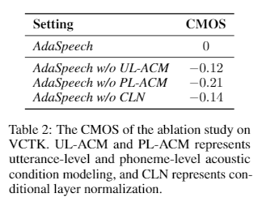
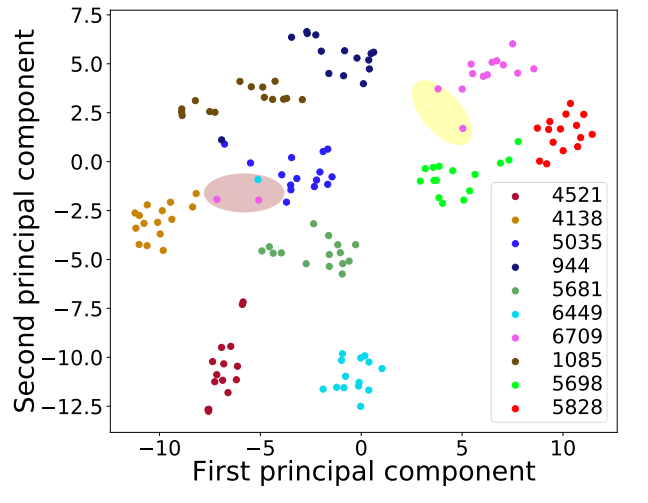
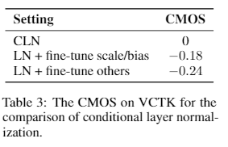
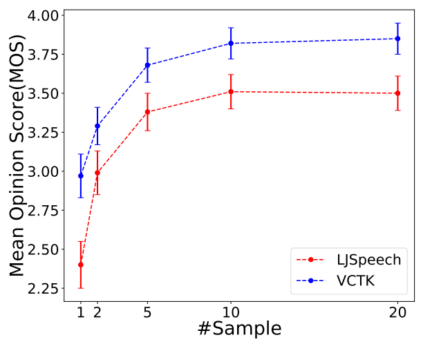

AdaSpeech: Adaptive Text to Speech for Custom Voice
ArXiv: arXiv:2103.00993
Authors
- Mingjian Chen* (Microsoft Azure Speech) t-miche@microsoft.com
- Xu Tan^* (Microsoft Research Asia) xuta@microsoft.com
- Bohan Li (Microsoft Azure Speech) bohan.li@microsoft.com
- Yanqing Liu (Microsoft Azure Speech) yanqliu@microsoft.com
- Tao Qin (Microsoft Research Asia) taoqin@microsoft.com
- Sheng Zhao (Microsoft Azure Speech) szhao@microsoft.com
- Tie-Yan Liu (Microsoft Research Asia) tyliu@microsoft.com
* Equal contribution. ^ Corresponding author.
Abstract
Custom voice, a specific text to speech (TTS) service in commercial speech platforms, aims to adapt a source TTS model to synthesize personal voice for a target speaker using few speech from her/him. Custom voice presents two unique challenges for TTS adaptation: 1) to support diverse customers, the adaptation model needs to handle diverse acoustic conditions which could be very different from source speech data, and 2) to support a large number of customers, the adaptation parameters need to be small enough for each target speaker to reduce memory usage while maintaining high voice quality. In this work, we propose AdaSpeech, an adaptive TTS system for high-quality and efficient customization of new voices. We design several techniques in AdaSpeech to address the two challenges in custom voice: 1) To handle different acoustic conditions, we model the acoustic information in both utterance and phoneme level. Specifically, we use one acoustic encoder to extract an utterance-level vector and another one to extract a sequence of phoneme-level vectors from the target speech during pre-training and fine-tuning; in inference, we extract the utterance-level vector from a reference speech and use an acoustic predictor to predict the phoneme-level vectors. 2) To better trade off the adaptation parameters and voice quality, we introduce conditional layer normalization in the mel-spectrogram decoder of AdaSpeech, and fine-tune this part in addition to speaker embedding for adaptation. We pre-train the source TTS model on LibriTTS datasets and fine-tune it on VCTK and LJSpeech datasets (with different acoustic conditions from LibriTTS) with few adaptation data, e.g., 20 sentences, about 1 minute speech. Experiment results show that AdaSpeech achieves much better adaptation quality than baseline methods, with only about 5K specific parameters for each speaker, which demonstrates its effectiveness for custom voice.
Contents
Audio Samples1.1 Adaptation voice on VCTK, LJSpeech and LibriTTS
Ablation Studies
2.1 Ablation Study on VCTK
2.2 Utterance-level Visualization Analysis
2.3 Finetune CLN and Finetune Other Decoder Parameters
2.4 Varying Adaptation Data on AdaSpeech
TTS Audio Samples in the Paper
Audio Samples
Adaptation voice on LibriTTS, VCTK and LJSpeech

VCTK speaker : Six spoons of fresh snow peas, five thick slabs of blue cheese, and maybe a snack for her brother Bob.
| GT | GT mel + MelGAN | Baseline (Spk Emb) | Baseline (Decoder) | AdaSpeech |
|---|---|---|---|---|
VCTK speaker : The Greeks used to imagine that it was a sign from the gods to foretell war or heavy rain.
| GT | GT mel + MelGAN | Baseline (Spk Emb) | Baseline (Decoder) | AdaSpeech |
|---|---|---|---|---|
LJSpeech speaker : Especially as no more time is occupied or cost incurred in casting setting or printing beautiful letters.
| GT | GT mel + MelGAN | Baseline (Spk Emb) | Baseline (Decoder) | AdaSpeech |
|---|---|---|---|---|
LJSpeech speaker : Printing in the only sense with which we are at present concerned differs from most if not from all the arts and crafts represented in the exhibition.
| GT | GT mel + MelGAN | Baseline (Spk Emb) | Baseline (Decoder) | AdaSpeech |
|---|---|---|---|---|
Libritts speaker : And so, howsoever reluctantly, she had gone.
| GT | GT mel + MelGAN | Baseline (Spk Emb) | Baseline (Decoder) | AdaSpeech |
|---|---|---|---|---|
Libritts speaker : All that I am doing is to use its logical tenability as a help in the analysis of what occurs when we remember.
| GT | GT mel + MelGAN | Baseline (Spk Emb) | Baseline (Decoder) | AdaSpeech |
|---|---|---|---|---|
Ablation Studies
Audios of Ablation Study on VCTK
VCTK speaker : There is , according to legend, a boiling pot of gold at one end.
| AdaSpeech | AdaSpeech w/o CLN | AdaSpeech w/o PL-ACM | AdaSpeech w/o UL-ACM |
|---|---|---|---|
VCTK speaker : Six spoons of fresh snow peas, five thick slabs of blue cheese, and maybe a snack for her brother Bob.
| AdaSpeech | AdaSpeech w/o CLN | AdaSpeech w/o PL-ACM | AdaSpeech w/o UL-ACM |
|---|---|---|---|
Audios of Utterance-level Visualization Analysis
Pink Point in Brown Circle
| You little scamp! | Well! why do you not enter? |
|---|---|
Blue Point in Brown Circle
| The Fairy. |
|---|
Audios of Finetune CLN and Finetune Other Decoder Parameters
VCTK speaker : Ask her to bring these things with her from the store.
| Finetune CLN | Finetune Other Decoder Parameters |
|---|---|
Audios of Varying Adaptation Data on AdaSpeech
LJSpeech speaker : especially as no more time is occupied or cost incurred in casting setting or printing beautiful letters.
| 1 Adaptation Sample | 2 Adaptation Samples | 5 Adaptation Samples | 10 Adaptation Samples | 20 Adaptation Samples |
|---|---|---|---|---|
VCTK speaker : Six spoons of fresh snow peas, five thick slabs of blue cheese, and maybe a snack for her brother Bob.
| 1 Adaptation Sample | 2 Adaptation Samples | 5 Adaptation Samples | 10 Adaptation Samples | 20 Adaptation Samples |
|---|---|---|---|---|
Our Related Works
FastSpeech: Fast, Robust and Controllable Text to Speech
Semi-Supervised Neural Architecture Search
MultiSpeech: Multi-Speaker Text to Speech with Transformer
LRSpeech: Extremely Low-Resource Speech Synthesis and Recognition
DeepSinger: Singing Voice Synthesis with Data Mined From the Web
UWSpeech: Speech to Speech Translation for Unwritten Languages